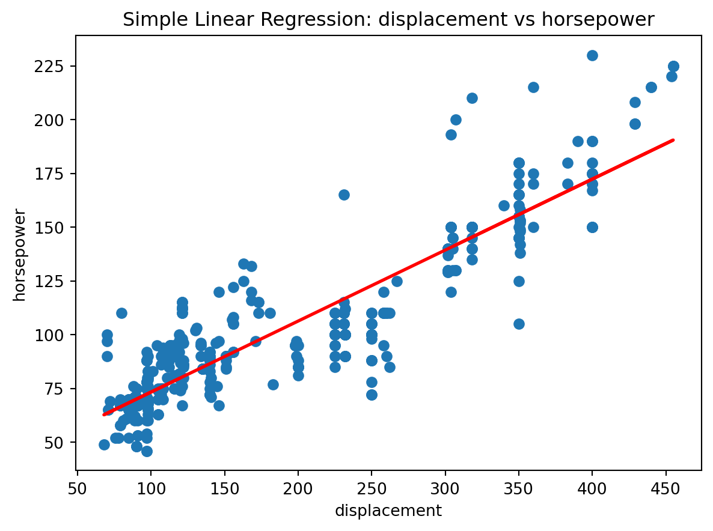
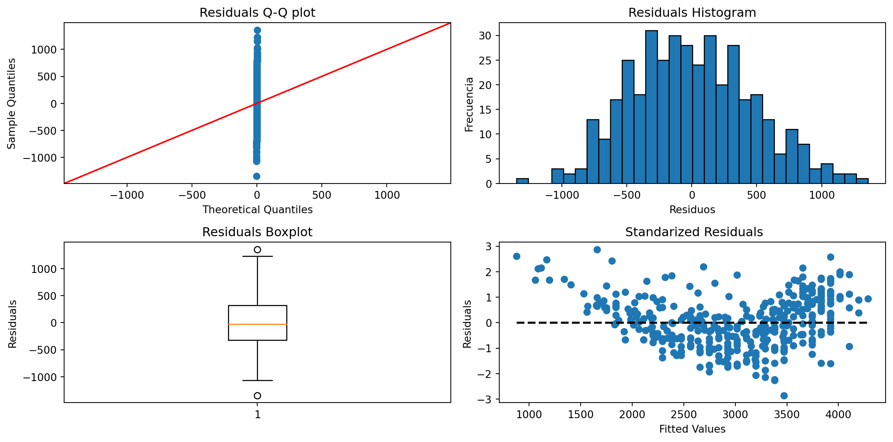
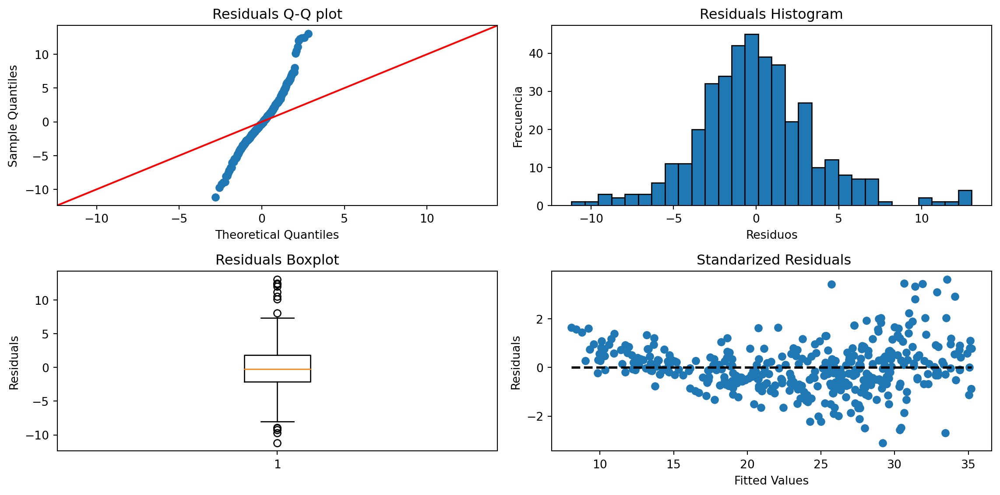

import pandas as pd
import statsmodels.formula.api as smf
import statsmodels.api as sm
import matplotlib.pyplot as plt
import seaborn as sns
import numpy as npParcial 3 Santiago Uribe
df = pd.read_csv('auto.csv')
dim_df = df.shape
print(f"The dataset consists of {dim_df[0]} rows and {dim_df[1]} columns")The dataset consists of 392 rows and 9 columnsLet’s check how much missing data there is by columns
# Missing values by column
df.isnull().sum()mpg 0
cylinders 0
displacement 0
horsepower 0
weight 0
acceleration 0
year 0
origin 0
name 0
dtype: int64Descriptive Statistics
df.describe()| mpg | cylinders | displacement | horsepower | weight | acceleration | year | origin | |
|---|---|---|---|---|---|---|---|---|
| count | 392.000000 | 392.000000 | 392.000000 | 392.000000 | 392.000000 | 392.000000 | 392.000000 | 392.000000 |
| mean | 23.445918 | 5.471939 | 194.411990 | 104.469388 | 2977.584184 | 15.541327 | 75.979592 | 1.576531 |
| std | 7.805007 | 1.705783 | 104.644004 | 38.491160 | 849.402560 | 2.758864 | 3.683737 | 0.805518 |
| min | 9.000000 | 3.000000 | 68.000000 | 46.000000 | 1613.000000 | 8.000000 | 70.000000 | 1.000000 |
| 25% | 17.000000 | 4.000000 | 105.000000 | 75.000000 | 2225.250000 | 13.775000 | 73.000000 | 1.000000 |
| 50% | 22.750000 | 4.000000 | 151.000000 | 93.500000 | 2803.500000 | 15.500000 | 76.000000 | 1.000000 |
| 75% | 29.000000 | 8.000000 | 275.750000 | 126.000000 | 3614.750000 | 17.025000 | 79.000000 | 2.000000 |
| max | 46.600000 | 8.000000 | 455.000000 | 230.000000 | 5140.000000 | 24.800000 | 82.000000 | 3.000000 |
#Separate attributes by type
int_attributes = df.select_dtypes(include=['int']).columns.to_list()
float_attributes = df.select_dtypes(include=['float']).columns.to_list()int_attributes['cylinders', 'horsepower', 'weight', 'year', 'origin']float_attributes['mpg', 'displacement', 'acceleration']With this we can see that the variables ‘cylinders’, ‘horsepower’, ‘weight’, ‘year’, ‘origin’ are discrete and the variables ‘mpg’, ‘displacement’, ‘acceleration’ are continuous.
Histograms and Bar Diagrams
fig, axs = plt.subplots(2, 4, figsize=(12,6))
axs = axs[:8].ravel()
for i, column in enumerate(df.columns):
column_data = df[column]
column_type = column_data.dtype
if column_type == 'int64': # Variables discretas
sns.countplot(data=df, x=column, ax=axs[i])
if column in ['horsepower', 'weight']:
if column == 'horsepower': axs[i].set_xticks(axs[i].get_xticks()[::10])
else: axs[i].set_xticks(axs[i].get_xticks()[::20])
axs[i].tick_params(axis='x', rotation=90)
elif column_type == 'float64': # Variables continuas
sns.histplot(data=df, x=column, kde=True, ax=axs[i])
plt.tight_layout()
plt.show()Boxplots
numeric_attributes = df.select_dtypes(include=['float', 'int']).columns.to_list()import matplotlib.patches as mpatches
fliers = dict(markerfacecolor='m', marker='D') #atypical data
mean_ = dict(markerfacecolor='green', marker='D')
mean_artist = mpatches.Patch(facecolor='green', label='Mean')
ad_artist = mpatches.Patch(color='m', label='Atypical Data')
fig, axs = plt.subplots(2, 4, figsize=(12,6))
axs = axs[:8].ravel()
for i, col in enumerate(numeric_attributes):
bp = axs[i].boxplot(df[col], vert=False, flierprops=fliers, showmeans=True, meanprops=mean_)
axs[i].legend(handles=[mean_artist, ad_artist], loc='upper left', fontsize=8)
axs[i].set_title(col)
plt.tight_layout()
plt.show()The descriptive analysis performed reveals some interesting characteristics of the variables under study. It is observed that the variable “mpg” (miles per gallon) and “displacement” (engine displacement) show a rightward skewness in their distributions. This implies that there is a concentration of lower values at the left end of the distributions and a long tail towards higher values. On the other hand, the variable “acceleration” shows a distribution that could be considered centered, since the median and mean are approximately equal. In addition, the width of the box in the box plot indicates a low interquartile range.
For the variables “cylinders” (number of cylinders) and “origin” (origin of the car), it is observed that no whiskers are shown in the box plot. This indicates that the maximum value is equal to the third quartile and the minimum value is equal to the first quartile, respectively. In other words, there are no outliers in these variables and the distribution is completely contained within the box. You can see that most of the cars are American.
In the case of the variable “weight” (vehicle weight), there is a wide range of weights, with an almost uniform distribution. The absolute frequency shows that there are several different weights without repeating with a maximum frequency of 3.
Finally, the variable “horsepower” exhibits a high variability in the data. It is observed that the absolute frequency varies between approximately 2 and 10 for different horsepower values.
Correlation
fig, ax = plt.subplots(figsize=(10, 10))
corr_matrix = df.corr()
sns.heatmap(corr_matrix, square=True, annot=True, ax=ax)
plt.show()In the correlation analysis, the following relationships stand out:
The correlation between displacement and cylinders is 0.95. This strong positive correlation suggests that as engine displacement increases, the number of cylinders also increases. This makes sense, since larger engines tend to have more cylinders to generate more power.
The correlation between displacement and horsepower is 0.9. This positive correlation also indicates a strong relationship, meaning that as engine displacement increases, horsepower tends to increase as well. This is logical, as larger engines tend to have higher horsepower.
The correlation between horsepower and weight is 0.86. This positive correlation suggests that as engine horsepower increases, vehicle weight tends to increase as well. This could be attributed to the fact that more powerful vehicles often require heavier components to support that additional power.
The correlation between horsepower and cylinders is 0.84. This positive correlation indicates that as engine horsepower increases, the number of cylinders tends to increase as well. This is consistent with the correlation observed between displacement and cylinders, since both attributes are related to engine size and power (to take into account for a multiple linear regression model).
The correlation between mpg (miles per gallon) and weight is -0.83. This strong negative correlation indicates that as vehicle weight increases, fuel economy in terms of miles per gallon decreases. This is understandable, as heavier vehicles generally require more energy to move and therefore have higher fuel consumption.
The correlation between mpg and displacement is -0.81. This negative correlation suggests that as engine displacement increases, fuel economy in terms of miles per gallon decreases. This makes sense, as larger and more powerful engines tend to consume more fuel.
Based on this, the following models are proposed
# Support functions
def plot_regression_model(model, x_label, y_label):
x = df[x_label]
y = df[y_label]
plt.scatter(x, y)
plt.plot(x, model.predict(), color='red', linewidth=2)
plt.xlabel(x_label)
plt.ylabel(y_label)
plt.title(f'Simple Linear Regression: {x_label} vs {y_label}')
plt.show()
from scipy.stats import shapiro
from statsmodels.stats.diagnostic import het_breuschpagan
def checkModelAssumptions(model):
residuos = model.resid
fig, axs = plt.subplots(nrows=2, ncols=2, figsize=(12, 6))
#QQ plot
sm.qqplot(residuos, line='45', ax=axs[0,0])
axs[0,0].set_title('Residuals Q-Q plot')
#Residuals Histogram
axs[0,1].hist(residuos, bins=30, edgecolor='black')
axs[0,1].set_xlabel('Residuos')
axs[0,1].set_ylabel('Frecuencia')
axs[0,1].set_title('Residuals Histogram')
#Reiduals Boxplot
axs[1,0].boxplot(residuos)
axs[1,0].set_ylabel('Residuals')
axs[1,0].set_title('Residuals Boxplot')
#Residuals
axs[1,1].scatter(model.fittedvalues, model.resid_pearson)
axs[1,1].plot([min(model.fittedvalues), max(model.fittedvalues)], [0, 0], 'k--', lw=2)
axs[1,1].set_xlabel('Fitted Values')
axs[1,1].set_ylabel('Residuals')
axs[1,1].set_title(' Standarized Residuals')
plt.tight_layout()
plt.show()
#Normality test
print('================= Normality test =================')
stat, p = shapiro(residuos)
print('Estadística de prueba:', stat)
print('Valor p:', p)
if p <= 0.05: print("Se rechaza H0")
else: print("No se rechaza H0")
#Homoscedasticity test
print('================= Homoscedasticity test =================')
lm, lm_pvalue, fvalue, f_pvalue = het_breuschpagan(residuos, model.model.exog)
print('Lagrange multiplier statistic:', lm)
print('p-value', lm_pvalue)
print('F value:', fvalue)
print('F p-value', f_pvalue)
if lm_pvalue <= 0.05: print("Se rechaza H0")
else: print("No se rechaza H0")Simple Linear Regression
# Model for "displacement" and "cylinders"
model1 = smf.ols(formula='cylinders ~ displacement', data=df).fit()
print(model1.summary()) OLS Regression Results
==============================================================================
Dep. Variable: cylinders R-squared: 0.904
Model: OLS Adj. R-squared: 0.904
Method: Least Squares F-statistic: 3675.
Date: Sun, 04 Jun 2023 Prob (F-statistic): 1.30e-200
Time: 02:36:43 Log-Likelihood: -305.62
No. Observations: 392 AIC: 615.2
Df Residuals: 390 BIC: 623.2
Df Model: 1
Covariance Type: nonrobust
================================================================================
coef std err t P>|t| [0.025 0.975]
--------------------------------------------------------------------------------
Intercept 2.4587 0.056 43.571 0.000 2.348 2.570
displacement 0.0155 0.000 60.624 0.000 0.015 0.016
==============================================================================
Omnibus: 5.983 Durbin-Watson: 1.475
Prob(Omnibus): 0.050 Jarque-Bera (JB): 6.236
Skew: 0.216 Prob(JB): 0.0442
Kurtosis: 3.441 Cond. No. 466.
==============================================================================
Notes:
[1] Standard Errors assume that the covariance matrix of the errors is correctly specified.The coefficient of determination (R-squared) is 0.904, which means that approximately 90.4% of the variability in the number of cylinders can be explained by engine displacement. The adjusted R-squared is also 0.904, indicating that the model is not over-fit and that the inclusion of the displacement variable is significant. The estimated coefficients of the model are 2.4587 for the intercept and 0.0155 for the displacement coefficient. Both coefficients are statistically significant (p-values close to zero). Therefore, on average, it is expected that for each unit increase in engine displacement, the number of cylinders will increase by approximately 0.0155. The 95% confidence intervals for the coefficients indicate that we can be 95% confident that the true values of the coefficients are within the intervals [2.348, 2.570] for the intercept and [0.015, 0.016] for “displacement”
plot_regression_model(model1, 'displacement', 'cylinders')checkModelAssumptions(model1)================= Normality test =================
Estadística de prueba: 0.977631151676178
Valor p: 9.41832968237577e-06
Se rechaza H0
================= Homoscedasticity test =================
Lagrange multiplier statistic: 53.203843897950094
p-value 3.0066986139946224e-13
F value: 61.24478907591415
F p-value 4.788834424237686e-14
Se rechaza H0Model 1 shows violations in the assumptions of normality and homoscedasticity for the residuals. In addition, the residuals follow a non-random pattern. This suggests that the model does not fully capture the structure of the data.
# Model for "displacement" and "horsepower"
model2 = smf.ols(formula='horsepower ~ displacement', data=df).fit()
print(model2.summary()) OLS Regression Results
==============================================================================
Dep. Variable: horsepower R-squared: 0.805
Model: OLS Adj. R-squared: 0.805
Method: Least Squares F-statistic: 1611.
Date: Sun, 04 Jun 2023 Prob (F-statistic): 1.51e-140
Time: 02:36:45 Log-Likelihood: -1666.2
No. Observations: 392 AIC: 3336.
Df Residuals: 390 BIC: 3344.
Df Model: 1
Covariance Type: nonrobust
================================================================================
coef std err t P>|t| [0.025 0.975]
--------------------------------------------------------------------------------
Intercept 40.3061 1.815 22.206 0.000 36.738 43.875
displacement 0.3300 0.008 40.134 0.000 0.314 0.346
==============================================================================
Omnibus: 26.744 Durbin-Watson: 1.168
Prob(Omnibus): 0.000 Jarque-Bera (JB): 46.621
Skew: 0.436 Prob(JB): 7.52e-11
Kurtosis: 4.447 Cond. No. 466.
==============================================================================
Notes:
[1] Standard Errors assume that the covariance matrix of the errors is correctly specified.The analysis of the second regression model shows a strong relationship between engine displacement and horsepower. The coefficient of determination (R-squared) is 0.805, indicating that approximately 80.5% of the variability in horsepower can be explained by engine displacement. The adjusted R-squared is also 0.805, indicating that the model is not over-fit and that the inclusion of the displacement variable is significant.
The estimated coefficients of the model are 40.3061 for the intercept and 0.3300 for the displacement coefficient. Both coefficients are statistically significant (p-values close to zero). This means that, on average, for each unit increase in engine displacement, the horsepower is expected to increase by approximately 0.3300.
The 95% confidence intervals for the coefficients indicate that we can be 95% confident that the true values of the coefficients are within the intervals [36.738, 43.875] for the intercept and [0.314, 0.346] for “displacement”.
plot_regression_model(model2, 'displacement', 'horsepower')
checkModelAssumptions(model2)================= Normality test =================
Estadística de prueba: 0.9744998216629028
Valor p: 2.2193339646037202e-06
Se rechaza H0
================= Homoscedasticity test =================
Lagrange multiplier statistic: 19.333635803734893
p-value 1.0975580432936778e-05
F value: 20.232891100109065
F p-value 9.058404464197071e-06
Se rechaza H0For model 2, violations of the assumptions of normality and homoscedasticity of the residuals are also observed. The normality analysis of the residuals shows that they do not follow a normal distribution, as evidenced by the p-value significantly less than 0.05 and in the QQ plot. This indicates that the model residuals do not conform to the normality assumption, which may affect the validity of statistical inferences.
# Model for "horsepower" and "cylinders"
model3 = smf.ols(formula='cylinders ~ horsepower', data=df).fit()
print(model3.summary()) OLS Regression Results
==============================================================================
Dep. Variable: cylinders R-squared: 0.711
Model: OLS Adj. R-squared: 0.710
Method: Least Squares F-statistic: 957.7
Date: Sun, 04 Jun 2023 Prob (F-statistic): 4.63e-107
Time: 02:36:47 Log-Likelihood: -522.02
No. Observations: 392 AIC: 1048.
Df Residuals: 390 BIC: 1056.
Df Model: 1
Covariance Type: nonrobust
==============================================================================
coef std err t P>|t| [0.025 0.975]
------------------------------------------------------------------------------
Intercept 1.5692 0.134 11.677 0.000 1.305 1.833
horsepower 0.0374 0.001 30.947 0.000 0.035 0.040
==============================================================================
Omnibus: 0.089 Durbin-Watson: 1.323
Prob(Omnibus): 0.957 Jarque-Bera (JB): 0.178
Skew: 0.024 Prob(JB): 0.915
Kurtosis: 2.907 Cond. No. 322.
==============================================================================
Notes:
[1] Standard Errors assume that the covariance matrix of the errors is correctly specified.The analysis of the third regression model reveals a significant relationship between horsepower and the number of cylinders. The coefficient of determination (R-squared) is 0.711, indicating that approximately 71.1% of the variability in the number of cylinders can be explained by horsepower. The adjusted R-squared is also 0.710, suggesting that the model is not over-fit and that the inclusion of the horsepower variable is significant.
The estimated coefficients of the model are 1.5692 for the intercept and 0.0374 for the horsepower coefficient. Both coefficients are statistically significant, as their p-values are close to zero. This implies that, on average, for each unit increase in horsepower, the number of cylinders is expected to increase by approximately 0.0374.
The 95% confidence intervals for the coefficients are [1.305, 1.833] for the intercept and [0.035, 0.040] for “horsepower.” This suggests that we can be 95% confident that the true values of the coefficients fall within these intervals.
plot_regression_model(model3, 'horsepower', 'cylinders')checkModelAssumptions(model3)
================= Normality test =================
Estadística de prueba: 0.9940255284309387
Valor p: 0.12716612219810486
No se rechaza H0
================= Homoscedasticity test =================
Lagrange multiplier statistic: 27.9577926963373
p-value 1.239906178721913e-07
F value: 29.951304911401273
F p-value 7.942070789332036e-08
Se rechaza H0Although the residuals of model 3 approximate a normal distribution, the presence of heteroscedasticity and the non-random pattern in the residuals suggest that there are aspects of the model that can be improved.
# Model for "mpg" and "weight"
model4 = smf.ols(formula='weight ~ mpg', data=df).fit()
print(model4.summary()) OLS Regression Results
==============================================================================
Dep. Variable: weight R-squared: 0.693
Model: OLS Adj. R-squared: 0.692
Method: Least Squares F-statistic: 878.8
Date: Sun, 04 Jun 2023 Prob (F-statistic): 6.02e-102
Time: 02:36:48 Log-Likelihood: -2968.4
No. Observations: 392 AIC: 5941.
Df Residuals: 390 BIC: 5949.
Df Model: 1
Covariance Type: nonrobust
==============================================================================
coef std err t P>|t| [0.025 0.975]
------------------------------------------------------------------------------
Intercept 5101.1136 75.487 67.576 0.000 4952.701 5249.526
mpg -90.5714 3.055 -29.645 0.000 -96.578 -84.565
==============================================================================
Omnibus: 4.278 Durbin-Watson: 0.870
Prob(Omnibus): 0.118 Jarque-Bera (JB): 4.151
Skew: 0.209 Prob(JB): 0.125
Kurtosis: 2.718 Cond. No. 78.4
==============================================================================
Notes:
[1] Standard Errors assume that the covariance matrix of the errors is correctly specified.The fourth regression model examines the relationship between the weight of the vehicle and its miles per gallon (mpg). The analysis reveals a significant negative relationship between these variables. The coefficient of determination (R-squared) is 0.693, indicating that approximately 69.3% of the variability in vehicle weight can be explained by mpg. The adjusted R-squared is also 0.692, suggesting that the inclusion of the mpg variable is significant and the model is not over-fit.
The estimated coefficients of the model are 5101.1136 for the intercept and -90.5714 for the mpg coefficient. Both coefficients are statistically significant, as their p-values are close to zero. This implies that, on average, for each unit increase in mpg, the weight of the vehicle is expected to decrease by approximately 90.5714 pounds.
The 95% confidence intervals for the coefficients are [4952.701, 5249.526] for the intercept and [-96.578, -84.565] for “mpg.” This indicates that we can be 95% confident that the true values of the coefficients fall within these intervals.
plot_regression_model(model4, 'mpg', 'weight')checkModelAssumptions(model4)
================= Normality test =================
Estadística de prueba: 0.9943320155143738
Valor p: 0.15512245893478394
No se rechaza H0
================= Homoscedasticity test =================
Lagrange multiplier statistic: 0.08781997666224495
p-value 0.7669671160177225
F value: 0.08739149392151216
F p-value 0.7676772277112628
No se rechaza H0Model 4 meets the assumptions of normality and homoscedasticity in the residuals. However, the presence of a U-shaped pattern in the residuals indicates the need to consider a more complex model specification to adequately capture the nonlinear relationship between the variables.
Multiple Linear Regression
Based on the correlations, it appears that displacement, cylinders, horsepower, and weight are all strongly correlated with each other and with the target variable, mpg (miles per gallon). These variables can be considered as potential predictors in a multiple linear regression model.
model = smf.ols(formula='mpg ~ displacement + cylinders + horsepower + weight', data=df).fit()
print(model.summary()) OLS Regression Results
==============================================================================
Dep. Variable: mpg R-squared: 0.708
Model: OLS Adj. R-squared: 0.705
Method: Least Squares F-statistic: 234.2
Date: Sun, 04 Jun 2023 Prob (F-statistic): 6.18e-102
Time: 02:36:50 Log-Likelihood: -1120.1
No. Observations: 392 AIC: 2250.
Df Residuals: 387 BIC: 2270.
Df Model: 4
Covariance Type: nonrobust
================================================================================
coef std err t P>|t| [0.025 0.975]
--------------------------------------------------------------------------------
Intercept 45.7568 1.520 30.102 0.000 42.768 48.745
displacement 0.0001 0.009 0.015 0.988 -0.018 0.018
cylinders -0.3933 0.410 -0.960 0.338 -1.199 0.412
horsepower -0.0428 0.013 -3.327 0.001 -0.068 -0.018
weight -0.0053 0.001 -7.364 0.000 -0.007 -0.004
==============================================================================
Omnibus: 37.596 Durbin-Watson: 0.862
Prob(Omnibus): 0.000 Jarque-Bera (JB): 50.918
Skew: 0.696 Prob(JB): 8.77e-12
Kurtosis: 4.085 Cond. No. 2.23e+04
==============================================================================
Notes:
[1] Standard Errors assume that the covariance matrix of the errors is correctly specified.
[2] The condition number is large, 2.23e+04. This might indicate that there are
strong multicollinearity or other numerical problems.The model as a whole is statistically significant, with an F-value of 234.2 and a very low p-value (6.18e-102), indicating that at least one of the predictor variables has a significant effect on the target variable.
The coefficient of determination (R-squared) of the model is 0.708, which means that approximately 70.8% of the variability in the variable “mpg” can be explained by the predictor variables included in the model. The adjusted coefficient of determination (adjusted R-squared) is 0.705, which takes into account the number of predictor variables and penalizes the inclusion of irrelevant variables.
Examining the regression coefficients for each predictor variable, we note that the coefficient for “displacement” is close to zero (0.0001) and is not statistically significant (p > 0.05). This suggests that there is no significant linear relationship between the variable “displacement” and the target variable “mpg”.
The coefficient for “cylinders” is -0.3933, but it is also not statistically significant (p > 0.05). This indicates that the variable “cylinders” does not have a significant linear effect on the variable “mpg” when controlling for the other predictor variables.
On the other hand, the coefficient for “horsepower” is -0.0428 and is statistically significant (p < 0.05). This suggests that, holding the other variables constant, a one unit increase in the horsepower variable is associated on average with a 0.0428 unit decrease in the mpg variable.
Finally, the coefficient for “weight” is -0.0053 and is also statistically significant (p < 0.05). This indicates that, holding the other variables constant, a one unit increase in the “weight” variable is associated on average with a 0.0053 unit decrease in the “mpg” variable.
In summary, the multiple linear regression model suggests that the variables “displacement” and “cylinders” do not have a significant linear relationship with the variable “mpg”. However, the variables “horsepower” and “weight” do have a significant effect on the target variable, with higher “horsepower” and “weight” being associated with a decrease in “mpg”.
checkModelAssumptions(model)================= Normality test =================
Estadística de prueba: 0.9724681973457336
Valor p: 9.123047561843123e-07
Se rechaza H0
================= Homoscedasticity test =================
Lagrange multiplier statistic: 31.211241968341973
p-value 2.7721711596957605e-06
F value: 8.36968334853748
F p-value 1.7483109755393702e-06
Se rechaza H0The multiple linear regression model used to predict the variable “mpg” does not meet the assumptions of normality of the residuals and homoscedasticity. In addition, a higher clustering of the residuals is observed on the right side compared to the left side. This skewness in the distribution of the residuals may indicate an additional violation of the linearity assumption or may be related to the non-normality of the residuals.
PCA
from sklearn.preprocessing import StandardScaler
from sklearn.decomposition import PCA
# The variable 'name', which does not contribute anything to the model, is eliminated.
# The target variable is also eliminated
df_copy = df.copy()
df_copy = df_copy.drop(['name', 'mpg'], axis=1)
# Standardize variables. This will ensure that the variables contribute equally to the analysis.
scaler = StandardScaler()
data_scaled = scaler.fit_transform(df_copy)
pca = PCA()
pca.fit(data_scaled)
X_pca = pca.fit_transform(data_scaled)
# Obtain variance explained by each component
explained_variance = pca.explained_variance_ratio_
plt.plot(np.cumsum(explained_variance))
plt.xlabel('number of components')
plt.ylabel('cumulative explained variance')
plt.grid()
plt.show()
The first 3 components are chosen since they already explain 90% of the variance of the data.
import statsmodels.api as sm
X_pca_selected = sm.add_constant(X_pca[:, :3])
y = df['mpg']
model_pca = sm.OLS(y, X_pca_selected).fit()
print(model_pca.summary()) OLS Regression Results
==============================================================================
Dep. Variable: mpg R-squared: 0.788
Model: OLS Adj. R-squared: 0.787
Method: Least Squares F-statistic: 481.5
Date: Sun, 04 Jun 2023 Prob (F-statistic): 2.25e-130
Time: 02:36:52 Log-Likelihood: -1056.9
No. Observations: 392 AIC: 2122.
Df Residuals: 388 BIC: 2138.
Df Model: 3
Covariance Type: nonrobust
==============================================================================
coef std err t P>|t| [0.025 0.975]
------------------------------------------------------------------------------
const 23.4459 0.182 128.754 0.000 23.088 23.804
x1 -3.0859 0.085 -36.393 0.000 -3.253 -2.919
x2 -0.3901 0.188 -2.077 0.038 -0.759 -0.021
x3 -2.2701 0.211 -10.754 0.000 -2.685 -1.855
==============================================================================
Omnibus: 30.837 Durbin-Watson: 1.296
Prob(Omnibus): 0.000 Jarque-Bera (JB): 56.646
Skew: 0.479 Prob(JB): 5.00e-13
Kurtosis: 4.597 Cond. No. 2.49
==============================================================================
Notes:
[1] Standard Errors assume that the covariance matrix of the errors is correctly specified.The multiple linear regression model using the three principal components shows a good fit to the data. The R-squared coefficient is 0.788, indicating that approximately 78.8% of the variability in the target variable (mpg) can be explained by the selected predictor variables. This suggests that the principal components capture a significant part of the information contained in the original variables.
When analyzing the estimated coefficients, it is observed that component 1 (x1) has a significant negative effect on the value of the target variable (mpg). This implies that as the value of component 1 increases, the value of mpg is expected to decrease. Similarly, component 2 (x2) also has a negative effect, although in a smaller magnitude. Component 3 (x3) shows an even greater impact on the target variable, also with a negative effect.
The statistical significance of the coefficients is confirmed by the associated p-values. All coefficients have p-values less than 0.05, indicating that they are statistically significant. This means that we can be confident in the relationship between the principal components and the target variable in the model.
In conclusion, the multiple linear regression model using the three principal components provides good explanatory power for the variability in the target variable (mpg).
checkModelAssumptions(model_pca)
================= Normality test =================
Estadística de prueba: 0.972704291343689
Valor p: 1.0097318181578885e-06
Se rechaza H0
================= Homoscedasticity test =================
Lagrange multiplier statistic: 25.070272841737527
p-value 1.4926830562085385e-05
F value: 8.836629235002121
F p-value 1.1147678707514367e-05
Se rechaza H0The analysis of the multiple linear regression model reveals some violations of the fundamental assumptions. First, it is observed that the residuals do not follow a normal distribution, which may affect the validity of the statistical inferences made. In addition, evidence of heteroscedasticity is found in the residuals, indicating that the variance of the errors is not constant. This may have implications for the precision of the estimated coefficients and the conclusions of the model. In addition, a higher clustering is observed on the right-hand side of the residuals, suggesting the presence of systematic patterns or nonlinearities that are not being captured by the model.